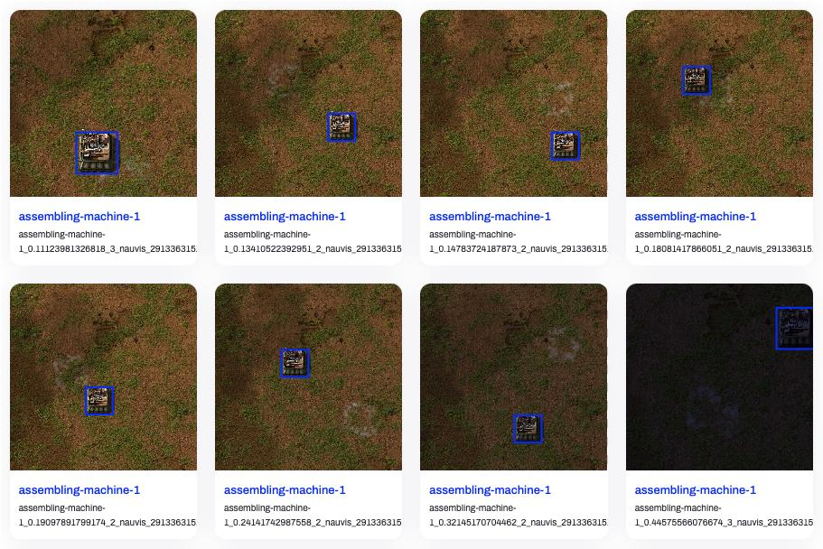

DevLog @ 2025.08.26
Long time no see, everyone! I'm @LemonNeko, one of the maintainers of AIRI. Ah, getting tired of starting like this, just like an LLM.
In my previous DevLog, I mentioned briefly looking at the Factorio Learning Environment paper and briefly discussed how we plan to improve airi-factorio, but... what I want to share with you today is not about that, but about progress in the pure vision direction.
Back in June this year, @nekomeowww released a nearly real-time VLM Playground HuggingFace Spaces, which felt really cool, so I decided to first try simple real-time image recognition (at the time I confused object detection with image recognition), then somehow hand it over to AI for decision-making, and finally output actions to the game in some way.
First, let me show you the results:
In the video, I'm playing Factorio via VNC connection in the web page, with object detection results on the right side, almost in real-time. I've also deployed it to HuggingFace Space, feel free to try it out.
So, how did I achieve this?
Putting Factorio Client into Docker
To allow AI to see the game screen, we need to ensure Factorio runs in a controlled environment, unaffected by our window size, position, etc. At the same time, we want this environment to be ready to use out-of-the-box, so I chose to put Factorio into Docker.
Factorio officially provides Docker images, but those are pure server-side. If we want AI to see the screen and control the game, we need a client, but I couldn't find existing Docker images (and Factorio's license agreement doesn't allow distributing the client this way), so we need to package it ourselves (and we still can't distribute our packaged client image, only share the Dockerfile).
So, how many steps does it take to put the Factorio clientthis elephant intoa refrigerator called Docker~~?~~
- Download Factorio client: Of course, it's the main character.
- Prepare a virtual display: Graphical applications need a display to show the screen.
- Prepare VNC service: It can read the virtual display's content, transmit the screen to external VNC clients, and pass user input to the game.
Seems like something's missing? Ah, audio? What audio? Doesn't exist. Current AI can't hear sounds yet, so we'll ignore it for now.
Downloading Factorio Client
You can directly download from the Factorio official website, but it requires manual login operations, which isn't convenient for automated workflows. So, I found a download script factorio-dl - a very complex shell script that, given username, password, and version to download, will automatically download the corresponding client based on system architecture.
Preparing a Virtual Display
This step is slightly more complex, but it's not as complicated as installing a full desktop environment. I also learned at this time that graphical applications don't necessarily need a desktop environment or window manager - just a minimal X environment and a display server is sufficient.
Very simple:
sudo apt install -y xvfb x11-apps mesa-utilsWhere:
xvfbis a virtual framebuffer and X server.x11-appsare some X-related tools; installing it will also install the X environment.mesa-utilsare some Mesa-related tools; Mesa is a software implementation of OpenGL, providing tools to help us test and debug OpenGL applications.
Preparing VNC Service
VNC stands for Virtual Network Computing, a remote desktop protocol that allows us to control another computer remotely, as if we were sitting right in front of it.
sudo apt install -y x11vncWith these, we can run the Factorio client in Docker and control it via VNC.
But this isn't enough yet. My goal is to play in the browser and perform real-time object detection inference. However, browsers can only use HTTP protocol, so we need tools like websockify to convert VNC protocol to HTTP protocol. Additionally, for debugging convenience, we need a web interface to display the VNC screen, so we also need to install novnc.
sudo apt install -y websockify novncGreat! Now the Docker image is ready. You can see the complete Dockerfile and usage instructions here.
Training Object Detection Model
For quick validation, I directly used YOLO11n's pre-trained model as the foundation to train our object detection model.
Preparing Dataset
This is how I collected the dataset:
- Use
surface.create_entityfunction to place machines at random positions in the scene, along with their selection box sizes and positions. - Use
game.take_screenshotto capture screenshots at various zoom levels and lighting conditions (daytime). - Generate annotation data based on selection boxes and use
helpers.write_fileto save to files.
My collection script is here. It uses typescript-to-lua to compile TypeScript to Lua, then uses RCON to pass it to Factorio for execution.
In the script, I collected three types of assemblers and conveyors, 20 images for each machine, each image at 1280x1280 resolution, without UI.
Oh, and to better debug my collection script, I developed a VSCode plugin that provides a CodeLens operation to compile and execute my script with one click.
After collecting images and annotation data, we need to organize the dataset according to the YOLO official format, then we can upload it to Ultralytics Hub to see the effect:

Looks pretty good, right? Let's start training!
Training the Model
Since I'm just getting started, I directly copied these few lines of code from Get Started:
from ultralytics import YOLO
model = YOLO("yolo11n.pt")
model.train(data="./dataset/detect.yaml", epochs=100, imgsz=640, device="mps")
model.export(format="onnx")Trained at 640x640 resolution, using MPS device (on macOS, using MPS device provides better performance), trained for 100 epochs, with 5 batches per epoch, reaching optimal results around epoch 70, exported ONNX model. Training took about 8 minutes, model size is about 10MB.
You can see the dataset, training code, and exported ONNX model here.
Performing Inference
Now we can assemble the two parts mentioned above. I used:
@novnc/novncto display VNC screen in the browser, while extracting canvas data to feed to the model.onnxruntime-webto perform inference in the browser, which provides WebGPU support to utilize GPU performance.
Initially, inference was very slow, about 400ms, and it would freeze the UI, making VNC unusable. I quickly learned some WebWorker usage and separated inference from display to solve this problem. I also discovered I wasn't actually enabling WebGPU, so speed was still slow.
ort.InferenceSession.create(model, { executionProviders: ['webgpu', 'wasm'] })Need to clearly specify allowing both WebGPU and WASM execution methods, so it can automatically switch to WASM execution when WebGPU is unavailable.
After enabling WebGPU, inference speed improved to about 80ms. I was still not satisfied, but didn't know how to optimize further. Then Cursor told me: "When normalizing pixel color values, you keep dividing by 255. You should calculate 1/255 first, then directly multiply by this value to avoid division."
Huh? Wait, division is slower than multiplication? Guess I really need to make up for those skipped computer science classes.
Following Cursor's suggestion, I modified the code, and inference speed improved to about 20ms. The experience is now quite good.
We skipped the part about processing model output earlier. Now let's see how to handle model output.
Processing Model Output
The model outputs an array of 84,000 elements and an array with dims of [1, 10, 8400], meaning the 84,000 elements are grouped in sets of 10, each set containing bounding box center x and y coordinates, bounding box width and height, and confidence scores for 6 categories, totaling 8,400 sets of results.
After filtering out low-confidence bounding boxes with a threshold of 0.6, we still need to use IOU as an NMS method to filter out overlapping bounding boxes.
About IOU and NMS, you can refer to this article. Simply put, it's adding the areas of two boxes together, subtracting their overlapping area to get the actual occupied area, then dividing the overlapping area by the actual occupied area to get IOU.
I used a very simple NMS implementation that sorts all bounding boxes by confidence, then traverses from highest to lowest. If a bounding box's IOU is greater than 0.7, it's considered the same object and filtered out.
function nms(boxes: Box[], iouThreshold: number): Box[] {
// 1. Filter by confidence and sort in descending order
const candidates = boxes
.filter(box => box.confidence > 0.6)
.sort((a, b) => b.confidence - a.confidence)
const result: Box[] = []
while (candidates.length > 0) {
// 2. Pick the box with the highest confidence
const bestCandidate = candidates.shift()!
result.push(bestCandidate)
// 3. Compare with remaining boxes and remove ones with high IOU
for (let i = candidates.length - 1; i >= 0; i--) {
// The iou() function needs to be implemented separately, as described in the article.
if (iou(bestCandidate, candidates[i]) > iouThreshold) {
candidates.splice(i, 1)
}
}
}
return result
}You can see the entire Playground's source code here.
You can also play with the IOU and NMS effects in the visualization component below by dragging labels to change box positions:
box1y1: 100
box1y2: 300
box2y1: 150
box2y2: 350
Issues Discovered
Through this practice, I discovered several issues:
- Cannot recognize non-square images: Once encountering non-square images, the model's confidence for all results becomes very low, even 0.
- The model can distinguish between tier 1 and tier 2 assemblers, but it also recognizes square objects like chests as assemblers.
- In actual gameplay, machine textures often have overlay status indicators, such as power, current recipe, used modules, etc., which interfere with the model's recognition.
Conclusion
This is the result of my work this month. Quite fruitful! Many thanks to @nekomeowww, @dsh0416, and makito for their help. Next, I need to find ways to improve model performance, then somehow let AI control the game.